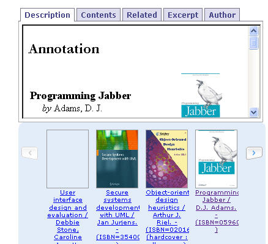

Many libraries are starting to make feeds of their new books available, but few make any further attempts to either exploit these feeds, or help others exploit them.
In an earlierMUTL entry (The Compleat Grazr/OPML Library Interface, v 0.0.1), I doodled one way in which a new books feed could be mixed with other library feeds in an OPML feed bundle that could provide a wide ranging view of library feeds within a single, OPML fed browser widget.
That exercise, in conjunction with the one described in this post, also led me to realise how ropey many feeds produced by libraries - including the OU - actually are. mainly, I suspect, because they are produced in a rush of 'What can we feed? Err, I know, new books" enthusiasm and then left published but untested on a public page that no-one ever uses.
In the post Wishlist Carousel I showed how a JSON feed could be used to feed book data into a carousel widget that would display the resource linked book covers in a space efficient way, an approach I then developed in Carousel Widget: Similar Books, which accepted an ISBN as part of a URL and then displayed a carousel of related books (as defined by an Amazon webservice call).
A later post (OU New Library Books Bookshelf) showed how a server based application hosted on Ning) (a free application development and hosting site) could be used to consume a new books feed and push it into a carousel widget.
I finally managed to get a couple of hours in tonight finishing that demo, so here it is, YAOMUTLE (yet another OUseful MUTL Entry). This one is hosted on Ning, so you should be able to see the (small amount of) PHP code by signing up and cloning the app. There are a few other litterlike files around, but I don't have time to tidy up right now. I do have ideas about how to make this a proper social and shareable app, but no time to even blog them, let alone execute them. (If anyone wants to lend me a coder for a week or two, or even a day or two, please get in touch!;-)
MUTL entry: Consuming library new books feeds.

There is a little bit of interpretation on the site linked to above, but points to note are:
The entry reuses (not necessarily mashes!):
The stuff's out there, folks, you just have to put it together in new ways...
So lobby the management to give you more playtime...
And if they ask 'why?', say the Corporate Fool said so...
Posted by ajh59 at August 10, 2006 12:25 AM